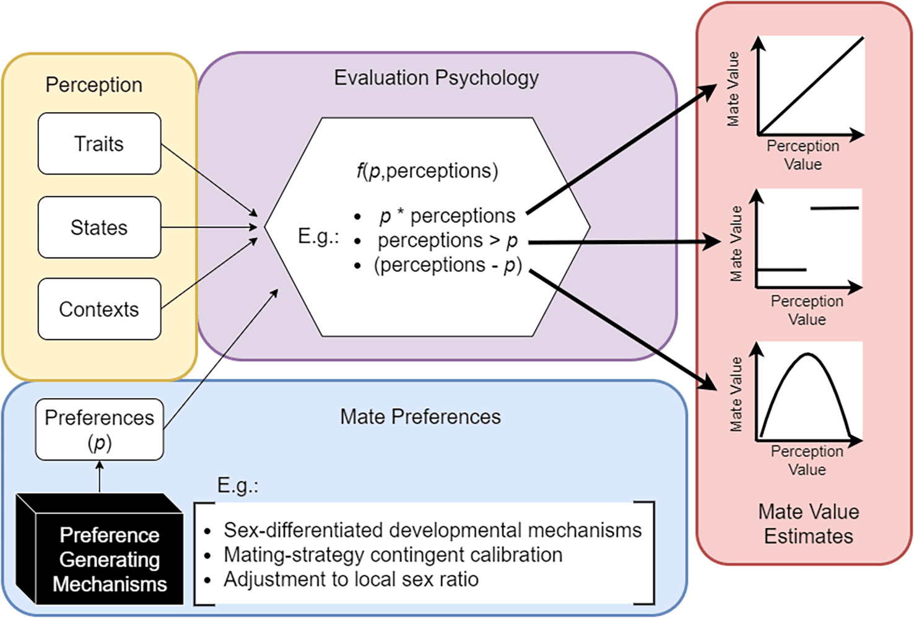
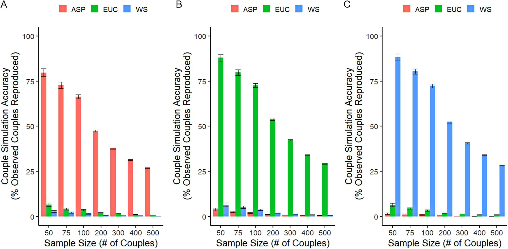
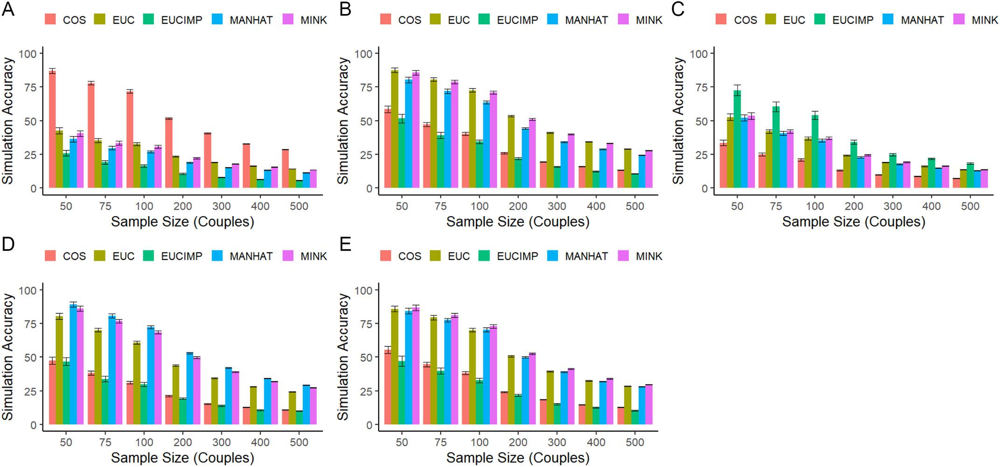
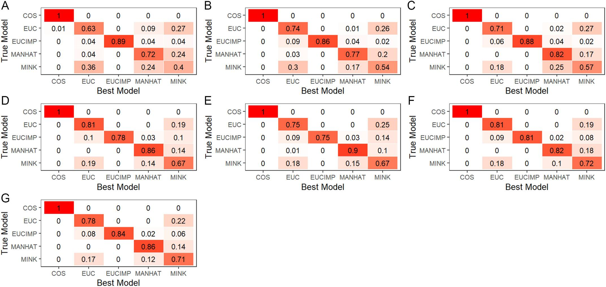
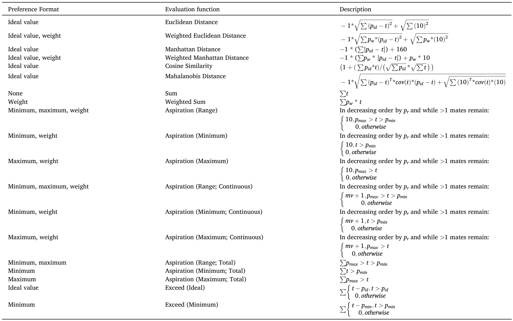
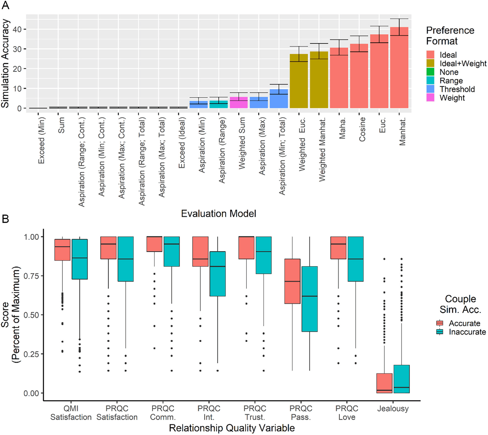
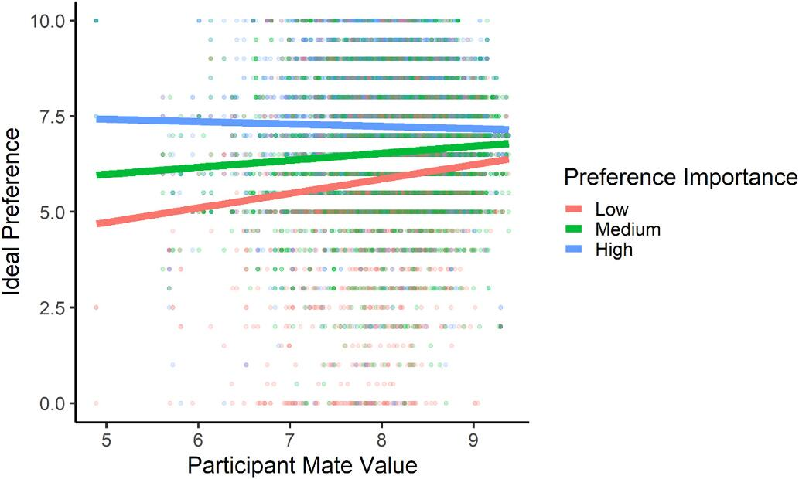
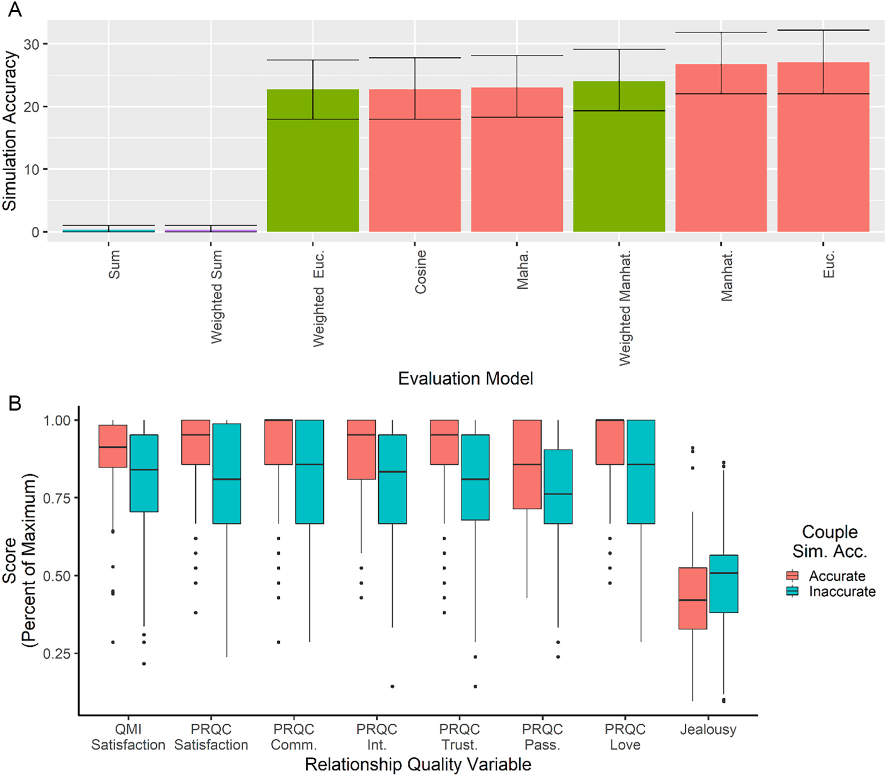
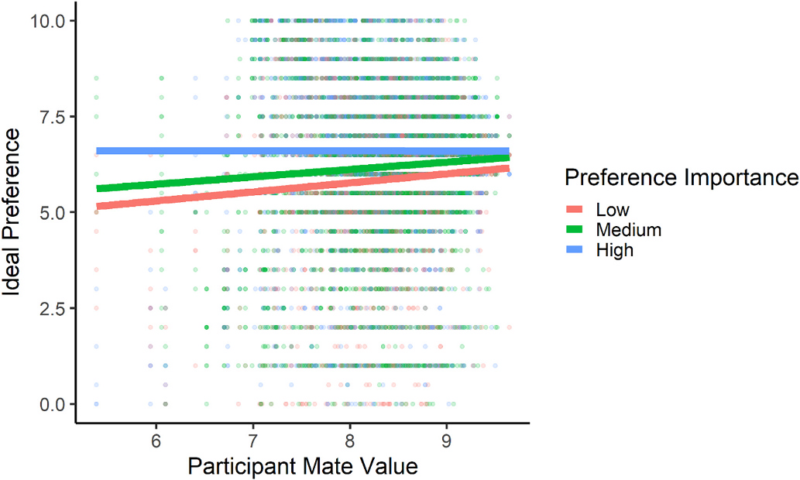

择偶偏好究竟是什么，现在还没有定论
1 偏好的多个起源
- 择偶偏好现代研究的起源至少可以追溯到20世纪70-80年代的进化心理学和人类学
- 择偶偏好适应（mate preference adaptations）：从非人类动物研究中获得启发，利于繁衍的基因会遗传下来
- 认为人类也一样，关注偏好的内容、性别的作用、情境、生态和选择行为
- 关注偏好本身，而不是前因后果
- 关注偏好的具体特征而不是计算过程
- 涉及心理过程，而且是持久的（进化而来的）
- 择偶偏好适应（mate preference adaptations）：从非人类动物研究中获得启发，利于繁衍的基因会遗传下来
- 经济学家的
偏好是指选项的排序- 不是对A的抽象偏好，而是A比B好的排序
- 经济学家的偏好是选A还是B的行为，不是心理
- 尽管受到挑战，但偏好视为排序的观念依然有影响力
- 心理和行为的定义各有优缺点
- 行为定义清晰，可以用数学表示，但很难对进化理论进行建构
- 自然选择不可能对所有选项进行排序：选项无限、情境可能有唯一性（独特）
- 心理定义更适合建构自然选择观点
- 理解决策情境中与反复出现的稳定规律相对应的特征
- 输入成功繁衍的策略优化选择
- 进化理论视角也可以指导行为的算法
- 没有对择偶偏好的确切定义
- 行为定义清晰，可以用数学表示，但很难对进化理论进行建构
1.1 为择偶偏好勾勒一个更精确的建模框架
- 择偶所涉及的决策任务
- 有性生殖生物，择偶才能繁衍
- 时间精力限制，不可能追求每个机会
- 如何分配有限的资源是一切的起点
- 配偶价值（mate value）
- 理论上择偶是任意的，但不同对象会有不同的繁衍后果，这一差异造成了配偶价值
- 与高配偶价值的对象结合，繁衍成功的概率更大
- 进化会促使形成选择高配偶价值的心理机制
- 配偶价值不可见，只能根据线索推断
- 特质、暂时状态、情境、双方关系等
- 存在知觉层次差异（如：外貌和社会地位）
- 必须被准确高效感知，且和配偶价值紧密相关
- 配偶价值是多维的，组合是多样的
- 理论上择偶是任意的，但不同对象会有不同的繁衍后果，这一差异造成了配偶价值
- 评价形式多种
- 二元、排序、得分
- 伴侣评价心理机制的输出
- 知觉通过运算转换为输出
- 图 1 展示了一种合理的运算形式
- 择偶偏好被定义为：择偶所依赖的评价函数中的参数
- 对感知和偏好进行加工，这些都是心理变量，符合进化的解释

1.2 择偶偏好与伴侣评价的本质
- 人类伴侣评价函数的性质是什么；函数中的偏好参数具有什么样的性质？
- 理想特征线性求和，偏好是权重
- 通过排序测量
- 通过调节效应测量
- 阈值，二元判断
- 对比特征和理想的偏移，偏移越小吸引力越大
- Ideal Standards Model
- 不同模型可以进行组合
- 表 1 展示了常见的模型和评价函数
| 偏好模型 | 评价函数 | 示例文献 |
|---|---|---|
| 权重 | \(p\times t\) | Buss (1989) ；Eastwick & Smith (2018) |
| 可接受范围 | \(p_{\max}>t>p_{\min}\) | Kenrick et al. (1990) |
| 最低阈值 | \(t>p\) | Miller & Todd (1998) |
| 理想值 | \(p-t\) | Fletcher & Simpson (2000) |
| 组合模型 | \(p_1\times(p_2-t)\)；或：若 \(t>p_1\)，则为 \(p_2\times t\)，否则为 \(0\) | Conroy-Beam et al. (2019) ；Li et al. (2002) |
注： \(p\) 表示偏好值，其具体作用随模型而异，可以充当权重、阈值或理想值；\(t\) 表示对潜在伴侣某项特质的知觉值；\(p_{\min}\) 和 \(p_{\max}\) 分别表示最低和最高可接受值；\(p_1\)、\(p_2\) 表示组合模型中承担不同作用的偏好参数
- 不同模型隐含的对偏好的理解不同
- 已有研究发现权重模型更合理
- 只是针对模型的拟合效果，并非针对偏好究竟是什么（斜率、阈值）
- 现有研究使用伴侣模型，同时比较择偶偏好和伴侣评价
- 招募真实恋爱被试，让被试创建包含自身特征（偏好和特质）的化身智能体
- 化身智能体进入择偶市场，操纵择偶策略
- 对比智能体和真实被试选择的结果
- 决策越接近人类，结果越接近
2 概念验证模型
- 参考 Conroy-Beam (2021) 的研究进行设计
2.1 模型设置
2.1.1 生成智能体总体
- 根据522对现实稳定伴侣，生成50000个智能体
- 被试报告16个维度上的择偶偏好，分以下几种形式：
- 理想值（11点）
- 最低和最高可接受阈值（11点）
- 相对重要性（排序、固定总分评分）
- 自己和伴侣的值（11点）
- 用这些数据模拟出一个50000样本的智能体总体
2.1.2 生成智能体伴侣配对
- 划分为100个子总体，每个子总体包含500个智能体，复制三份，每份用不同规则得到模拟的匹配对
- 子总体中智能体根据规则计算每个潜在对象的配偶价值
- 加权求和：相对重要性加权求和
- 期望阈值：按偏好重要性顺序，依据最低和最高可接受阈值逐步筛选；用完全部维度，或下一项筛选将排除所有剩余对象时停止。剩余对象赋值为10，被排除者赋值为0
- 欧氏距离：特质和理想值之间的欧氏距离，缩放到0-10,0是差距最大，10是完全匹配
- 每个智能体还拥有10个单位数值作为精力金钱等有限条件
- 根据配偶价值大小分配
- 将给予对方和从对方获得的投入相乘，得到双方相互投入的指标，再据此按比例重新分配资源
- 根据这个权重重新分配，重复100次
- 最后数值会集中在一两个智能体上，如果两人互为投入最多的对象，则形成配对
2.1.3 应用伴侣配对模拟
- 从三个模拟总体中，分别在50、75、100、200、300、400、500对伴侣这七种样本量下，各随机抽取100个伴侣样本
- 对每个样本，分别使用三种评价规则重新进行伴侣配对模拟
- 比较各模型准确重建原始配对的比例，检验原始生成模型能否优于替代模型
- 如果相同规则匹配出的伴侣对数是最多的，说明这种方法可以很好地识别匹配规则
2.2 模型结果

- 图 2 展示了模拟结果，相同规则得到的结果最好，且随着样本量增加，模拟效果越来越不好，和前人研究一致
- 基于欧氏距离、曼哈顿距离、幂次为1.5的闵可夫斯基距离重新评估配偶价值
- 使用余弦相似度计算配偶价值
- 使用加权欧氏距离，根据偏好重要性评分，对各维度的偏差进行加权

- 图 3 展示了模拟结果，拟合效果接近，但样本量变大后，一致的配对方法拟合效果还是占优

- 伴侣配对模拟能够清楚地区分彼此差异较大的伴侣评价模型，但对于相对接近的距离度量，其区分能力略低
2.3 讨论
- 可以识别原有的匹配模式
- 相似的距离匹配策略，在少量被试时识别效果较低
- 后续比较中不再纳入闵可夫斯基距离，并对曼哈顿距离与欧氏距离之间的差异作谨慎解释
3 研究1
- 概念验证表明，在所设定的模拟条件下，伴侣配对模拟能够区分不同的择偶偏好和伴侣评价模型
- 将伴侣配对模拟应用于一个真实伴侣样本
3.1 方法
3.1.1 被试
- 526对情侣，美国异性恋，正处于恋爱关系中，与伴侣同居
- 平均年龄56.89 ± 13.95，关系持续时间的中位数27.83年，范围为1—64年
- 已婚（93.58%）、认真交往（3.26%）、随意交往（1.34%）
3.1.2 材料
- 偏好问卷使用自己开发的15个维度和年龄：理想、最大最小、自我和伴侣
- Affectionateness、Ambition、Artisticness、Disposition、Health、Humor、Intelligent、Kindness、Parenting Skills、Physical Attractiveness、Religiousness、Resources、Sexiness、Status、Family Support
- 除年龄外，每个维度两道题
- 偏好排序：16个维度排序（对的年龄也是一个维度）
- 重要性评分：每个维度使用10点评分，16个维度的总分固定为80分，总分不变情况下调整重要性分数
- 关系质量问卷：Quality Marriage Index（QMI）、Perceived Relationships Quality Components Inventory（PRQC）、Multidimensional Jealousy Scale（MJS）的认知分量表
3.1.3 程序
- 随机顺序完成理想偏好评分、自我评分和伴侣评分，各题组内部的条目顺序也随机排列
- 完成QMI
- 随机顺序完成最低偏好、最高偏好和偏好重要性评分，各题组内部的条目同样随机排列
- 题组分别与PRQC的部分分量表搭配呈现；偏好排序任务和重要性评分任务之间，则穿插多维嫉妒量表的认知分量表
3.1.4 数据处理
- 为每名被试创建一个智能体，继承其所有形式的偏好；特质值采用本人和伴侣对该被试特质评分的均值
- 根据不同算法，生成19个模型进行模拟

- 使用基于伴侣的随机截距，用准确性来预测标准化后的关系变量
3.2 结果

- 仅使用理想值的模型结果最好，加权求和模型和期望阈值模型表现均很差
- 被识别的被试关系质量更好
- 预测准确性来预测关系质量，均显著（\(ps<0.014\)）
3.2.1 关于重要性的探索性分析
- 择偶偏好理解为不同维度的相对重要性，一直是一种占主导地位的偏好模型，但偏好权重模型表现较差
- 为什么偏好权重和选择无关，但可以预测偏好的性别差异
- 可能是：人们会根据自己在择偶市场中的不同经历调整偏好
- 被拒绝时，择偶偏好往往会变得更加灵活
- 高配偶价值的人较少遭到拒绝，有较高的偏好标准
- 被拒绝后，可能同时降低各个标准，也可能降低部分不重要的标准
- 某个偏好维度的相对重要性，可能反映的是理想偏好对经验的敏感程度，而不是直接参与对潜在伴侣的评价
- 使用欧氏距离，计算配偶价值，建构其与偏好重要性评分的交互，来预测理想值偏好
- 图 6 展示了交互结果，结果显著
- 理想偏好与配偶价值相关，且在不重要的偏好上更强
- 说明不重要的偏好会更灵活

3.3 讨论
- 理想值是最合理的择偶偏好模型，而距离度量是最合理的伴侣评价模型
- 研究1中被试的伴侣关系已经持续很长时间，结果可能无法推广到关系时间较短的被试身上
- 曼哈顿距离的优势出乎意料
- 曼哈顿距离不会区分“少数维度上的较大偏差”与“多个维度上的较小偏差”
- 恶毒可能被外貌弥补
- 会有一定的不准确性，接下来在短期关系的样本上进行研究
4 研究2
4.1 方法
4.1.1 被试
- 295对，590人，异性稳定伴侣，25.87 ± 5.00岁
- 关系不足5年，中位数3年，0-5年，四分位数2-4年
4.1.2 材料
- 理想偏好、固定总分的重要性评分、自我和伴侣特质评分，以及QMI、PRQC和完整MJS
4.1.3 程序和数据分析
- 和研究1一致
- 仅考察理想值或权重形式偏好的评价模型
- 欧氏距离、加权欧氏距离、曼哈顿距离、加权曼哈顿距离、余弦相似度、求和、加权求和
4.2 结果

- 偏好作为理想值的模型优于作为权重的模型
- 欧氏距离和曼哈顿距离预测效果没有显著差异
- 欧氏距离准确性依然可以预测所有关系质量
- 整体准确率下降出乎意料
- 之前研究样本越少准确率越高
- 关系时间较短，模型更适合时间更长的
- 样本同质性更高
- 研究1和2的样本混合进行第三轮模拟
- 将研究2中的每一对样本分别放入研究1中抽样出的294对样本中（保证样本量一致，整体同质性和研究1类似）
- 研究2的伴侣55.256%被识别，研究1样本的平均准确性为42.765%
- 长时关系也能识别短时关系，说明主要是样本同质性更强的原因

- 图 8 所示，不重要的偏好维度更灵活
4.3 讨论
- 研究2总体上复制了研究1的结果
- 可以推广到短时伴侣，但距离度量识别更困难
- 纵向研究单身被试的择偶选择或更大规模样本，可能可以有更多的解释
5 总讨论
- 择偶偏好是评价函数中的参数，这些参数参与决定对潜在伴侣的知觉如何转化为配偶价值估计
- 权重、阈值、范围和理想值
- 表现最好的择偶偏好模型是将偏好理解为理想值的模型
- 在关系长和短的被试中均适用
- 被准确识别的被试有着更高的关系质量
- 启示：
- 将相对重要性（优先性）和偏好本身区分开来
- 探索性结果提示，优先性可能主要参与理想偏好的形成与调整，再通过理想偏好间接关联择偶选择
- 关注个体内部发展，偏好会随时间经历变化
- 局限
- 偏好是在关系建立后测量的，难以排除人们根据现有伴侣调整偏好的可能
- 被试并非来自同一个真实、相对封闭的择偶市场，彼此通常不认识
- 同一模型假定所有人及不同维度的偏好具有相同形式，未考虑偏好形式的差异
- 模拟准确性与关系质量之间的联系尚难解释
- 资源分配模型只是择偶过程的一种近似，换用其他选择模型可能影响结果
- 距离函数表现较好，不代表心智实际计算了这些距离；简单启发式规则也可能产生类似结果
- 可能只需要较少的偏好维度，就能达到相近的模拟准确率
- 当前比较方法没有对模型复杂度设置惩罚
- 择偶包含不同决策尺度：总体上选择伴侣，与当下决定和谁相处，面对的选项范围不同
- 不同形式的偏好可能调节不同尺度的决策，这一解释仍有待检验
参考文献
Buss, D. M. (1989). Sex differences in human mate preferences: Evolutionary hypotheses tested in 37 cultures. Behavioral and Brain Sciences, 12(1), 1–14. https://doi.org/10.1017/S0140525X00023992
Conroy-Beam, D. (2021). Couple simulation: A novel approach for evaluating models of human mate choice. Personality and Social Psychology Review, 25(3), 191–228. https://doi.org/10.1177/1088868320971258
Conroy-Beam, D., Buss, D. M., Asao, K., Sorokowska, A., Sorokowski, P., Aavik, T., Akello, G., Alhabahba, M. M., Alm, C., Amjad, N., Anjum, A., Atama, C. S., Duyar, D. A., Ayebare, R., Batres, C., Bendixen, M., Bensafia, A., Bizumic, B., Boussena, M., et al.others. (2019). Contrasting computational models of mate preference integration across 45 countries [Journal Article]. Scientific Reports, 9(1), 16885. https://doi.org/10.1038/s41598-019-52748-8
Conroy-Beam, D., Walter, K. V., & Duarte, K. (2022). What is a mate preference? Probing the computational format of mate preferences using couple simulation. Evolution and Human Behavior, 43(6), 510–526. https://doi.org/10.1016/j.evolhumbehav.2022.09.002
Eastwick, P. W., & Smith, L. K. (2018). Sex-differentiated effects of physical attractiveness on romantic desire: A highly powered, preregistered study in a photograph evaluation context. Comprehensive Results in Social Psychology, 3(1), 1–27. https://doi.org/10.1080/23743603.2018.1425089
Fletcher, G. J. O., & Simpson, J. A. (2000). Ideal standards in close relationships:their structure and functions. Current Directions in Psychological Science, 9(3), 102–105. https://doi.org/10.1111/1467-8721.00070
Kenrick, D. T., Sadalla, E. K., Groth, G., & Trost, M. R. (1990). Evolution, traits, and the stages of human courtship: Qualifying the parental investment model. Journal of Personality, 58(1), 97–116. https://doi.org/10.1111/j.1467-6494.1990.tb00909.x
Li, N. P., Bailey, J. M., Kenrick, D. T., & Linsenmeier, J. A. W. (2002). The necessities and luxuries of mate preferences: Testing the tradeoffs. Journal of Personality and Social Psychology, 82(6), 947–955. https://doi.org/10.1037/0022-3514.82.6.947
Miller, G. F., & Todd, P. M. (1998). Mate choice turns cognitive. Trends in Cognitive Sciences, 2(5), 190–198. https://doi.org/10.1016/S1364-6613(98)01169-3